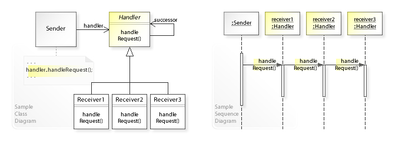
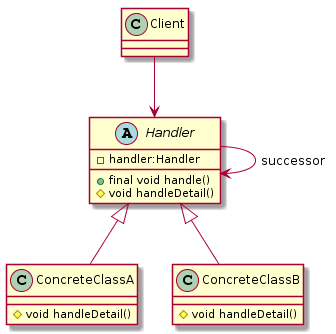
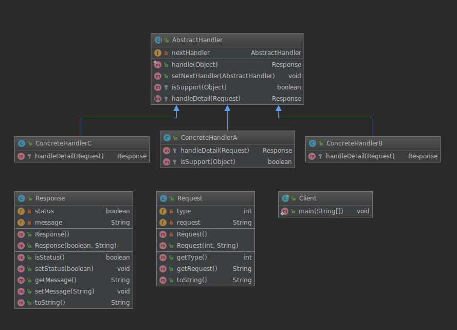

责任链模式（Chain Of Responsibiltiy）
定义: 使多个对象都有机会处理请求，从而避免了请求的发送者和接收者之间的耦合关系。将这些对象连成一条链(不一定是直线,也可以是环或者其他的)，并沿着这条链传递该请求，直到有对象处理它为止。
责任链模式有点类似于递归,在结构上与装饰器模式几乎相同，不同之处在于对于装饰器，所有类都处理请求，而对于责任链，链中的一个类恰好处理请求。
类型:行为类模式
wiki:https://en.wikipedia.org/wiki/Chain-of-responsibility_pattern

UML类图
1 2 3 4 5 6 7 8 9 10 11 12 13 14 15 16 17 18 19 20 21 22 23 24 25 26 27
| @startuml handler abstract Handler{ - handler:Handler + final void handle() # void handleDetail() } class ConcreteClassA{ # void handleDetail() } class ConcreteClassB{ # void handleDetail() } class Client{ } Client --> Handler Handler <|-- ConcreteClassA Handler <|-- ConcreteClassB Handler --> Handler:successor @enduml
|

责任链模式实例
整体结构

实体类
Request(请求实体类)
1 2 3 4 5 6 7 8 9 10 11 12 13 14 15 16 17 18 19 20 21 22 23 24 25 26 27 28 29
| public class Request{ private int type; private String request; private Request() {} public Request(int type, String request) { this.type = type; this.request = request; } public int getType() { return type; } public String getRequest() { return request; } @Override public String toString() { return "Request{" + "type=" + type + ", request='" + request + '\'' + '}'; } }
|
Response(响应实体类)
1 2 3 4 5 6 7 8 9 10 11 12 13 14 15 16 17 18 19 20 21 22 23 24 25 26 27 28 29 30 31 32 33 34 35 36 37 38 39
| public class Response { private boolean status = false; private String message = "请求失败"; public Response(){} public Response(boolean status, String message) { this.status = status; this.message = message; } public boolean isStatus() { return status; } public void setStatus(boolean status) { this.status = status; } public String getMessage() { return message; } public void setMessage(String message) { this.message = message; } @Override public String toString() { return "Response{" + "status=" + status + ", message='" + message + '\'' + '}'; } }
|
抽象处理类
AbstractHandler
1 2 3 4 5 6 7 8 9 10 11 12 13 14 15 16 17 18 19 20 21 22 23 24 25 26 27 28 29 30 31 32 33 34 35 36 37
| public abstract class AbstractHandler { private AbstractHandler nextHandler; * 定义算法骨架 * @param o 请求对象 Request * @return 响应对象 Response */ public final Response handle(Object o){ if (this.isSupport(o)){ return this.handleDetail((Request) o); } else { return null != this.nextHandler ? this.nextHandler.handle(o) : new Response(); } } * 设置下一个处理类 * @param nextHandler nextHandler */ public void setNextHandler(AbstractHandler nextHandler) { this.nextHandler = nextHandler; } protected boolean isSupport(Object object){ return (object instanceof Request); } protected abstract Response handleDetail(Request request); }
|
具体实现类
ConcreteHandlerA
1 2 3 4 5 6 7 8 9 10 11 12 13 14 15 16 17 18 19 20 21 22 23 24
| public class ConcreteHandlerA extends AbstractHandler{ * 处理细节 * @param request Request 请求对象 * @return Response 响应对象 */ @Override protected Response handleDetail(Request request) { System.out.println(">>> ConcreteHandlerA Accept Request : "+ request.toString()); return new Response(true,"return from ConcreteHandlerA..."); } * 覆盖父类判断是否支持处理方法 * @param object 请求对象 * @return boolean */ @Override protected boolean isSupport(Object object) { return super.isSupport(object) && 1 ==((Request) object).getType(); } }
|
ConcreteHandlerB
1 2 3 4 5 6 7 8 9 10 11 12
| public class ConcreteHandlerB extends AbstractHandler{ * 处理细节 * @param request Request 请求对象 * @return Response 响应对象 */ @Override protected Response handleDetail(Request request) { System.out.println(">>> ConcreteHandlerB Accept Request : "+ request.toString()); return new Response(true, "return from ConcreteHandlerB..."); } }
|
ConcreteHandlerC
1 2 3 4 5 6 7 8 9 10 11 12
| public class ConcreteHandlerC extends AbstractHandler{ * 处理细节 * @param request Request 请求对象 * @return Response 响应对象 */ @Override protected Response handleDetail(Request request) { System.out.println(">>> ConcreteHandlerC Accept Request : "+ request.toString()); return new Response(true, "return from ConcreteHandlerC..."); } }
|
客户端(执行者)
Client
1 2 3 4 5 6 7 8 9 10 11 12 13 14 15 16 17 18 19 20 21 22 23 24 25 26
| public class Client { public static void main(String[] args) { AbstractHandler handlerA = new ConcreteHandlerA(); AbstractHandler handlerB = new ConcreteHandlerB(); AbstractHandler handlerC = new ConcreteHandlerC(); handlerA.setNextHandler(handlerB); handlerB.setNextHandler(handlerC); Request request = new Request(3, "hello"); final Response handle = handlerA.handle(request); System.out.println(">>> Response: "+handle); final Response handle1 = handlerA.handle(new Object()); System.out.println(">>> Response: "+handle1); } }
|
责任链模式的应用
优点
缺点
- 递归结构,调试可能比较麻烦
- 如果链很长可能会有性能问题
注意事项
- 为了避免链过长,可以在
setNextHandler设置链路的时候,增加一个阈值,控制链大小